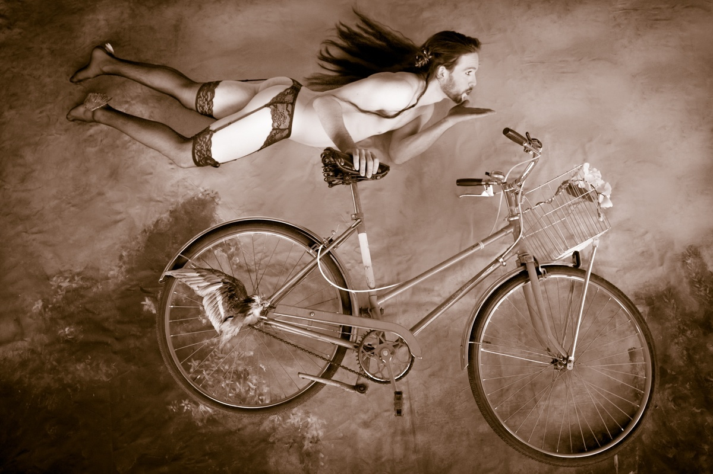
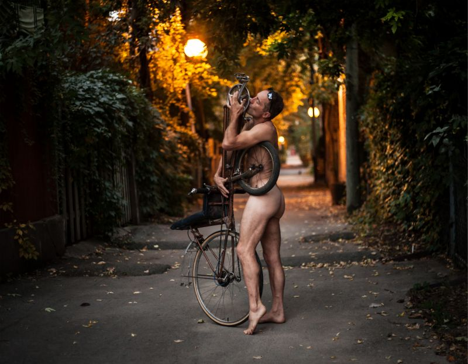
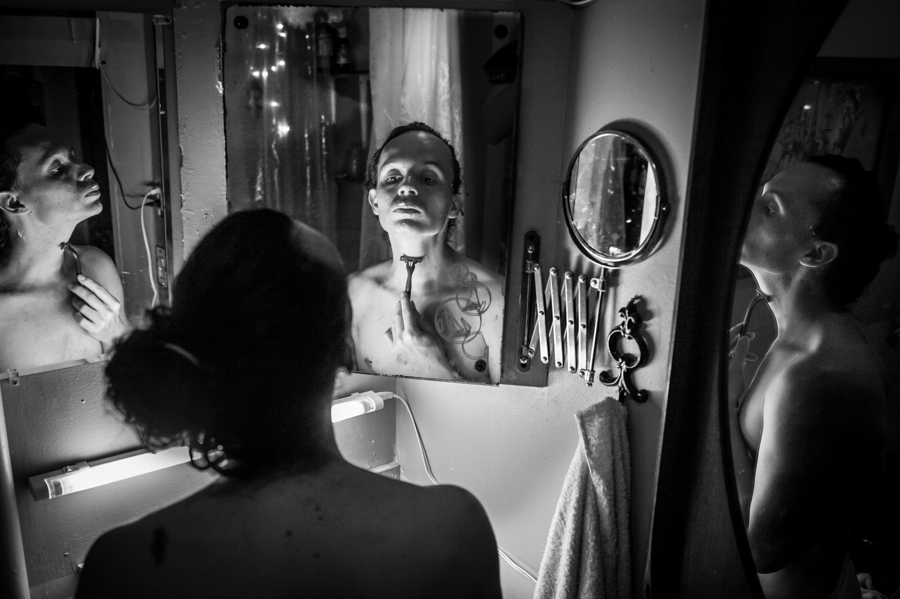

- 

- 


- 


 Dance
Dance
 Humanature
Humanature
 Rehab
Rehab
 Mama Dance
Mama Dance
 Dreamers
Dreamers
 Family
Family
 Studio
Studio
 Inner landscape
Inner landscape


Hi!
I am a Polish photographer based in Montreal,
specialised in portrait photography.
I graduated form Warsaw School of Photography in 2010 and from
Cultural Studies at Warsaw University in 2012.
I am mostly interested in the issues of body,
movement and femininity. My mission as a photographer is to
create intimate and authentic connections and provide a safe space
for people to freely express themselves through my images.
I have a broad perspective on visual culture, which
I gathered traveling and doing creative projects for the last 5 years
in Europe, North America and South America.
My interest in portraiture is primarily anchored in the documentary
work of Mary-Ellen Young and Diane Arbus, but I also take inspiration
from the minimalist aesthetics of Rinko Kawauchi’s art and the otherworldly,
campy ambient of Tsai Ming-liang’s movies.
Please contact me if you’re interested in a private photo shoot
or a creative collaboration. Yes, I will travel for work.